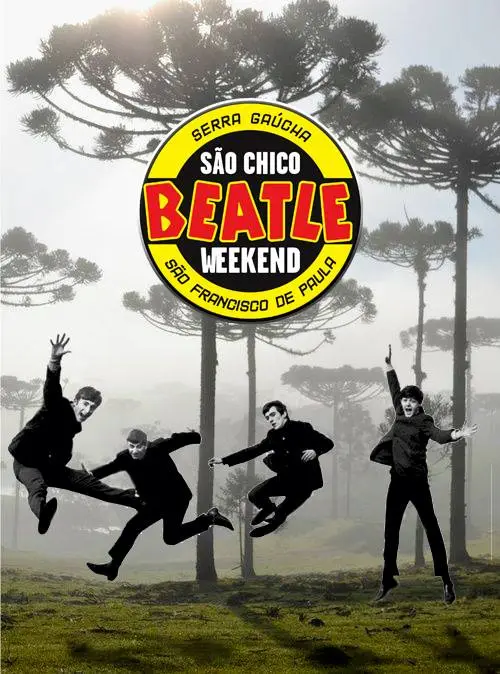
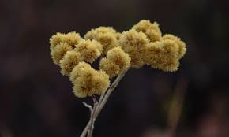
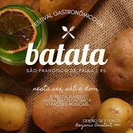
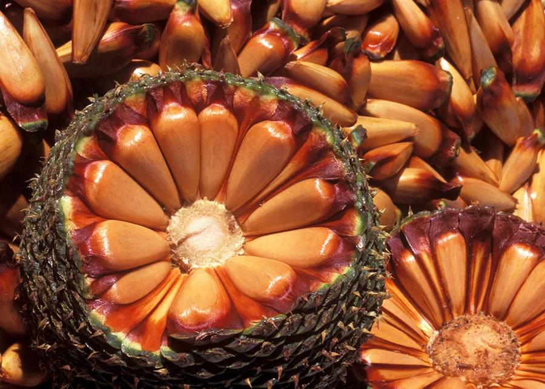
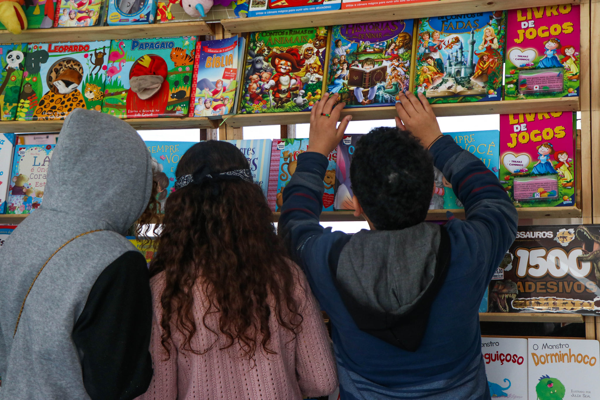
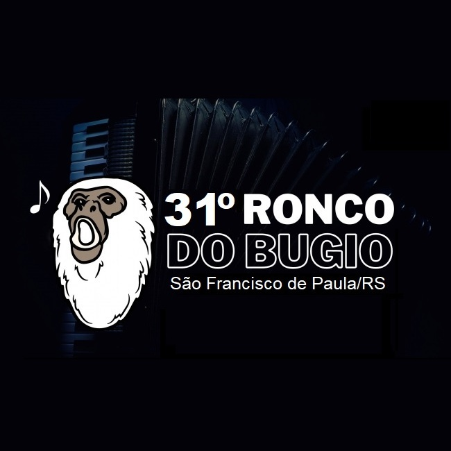
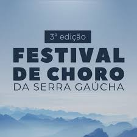
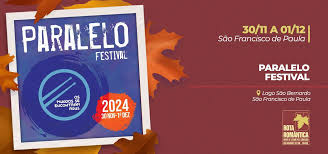

São Francisco de Paula tem raízes gaúchas profundas, com festas tradicionais, música nativista e o famoso chimarrão.
| Evento | O que é |
|---|---|
The Beatles Weekend |
Um evento que agrada qualquer Beatlemaníaco. Realizado nas margens do Lago São Bernardo, o evento proporciona uma experiência única, onde diversas bandas se apresentam, desde bandas de tributo aos beatles, bandas cover, a até bandas autorais. Todas que sempre tocam alguma canção do quarteto de Liverpool. Além das atrações nacionais, já tivemos a presença de Julia Baird, irmã do John Lennon, além dos membros da sua primeira banda. É uma experiência que agrada até mesmo que não é fã de The Beatles. 🗓️ Janeiro |
Colheita da Macela |
A macela ou marcela (nome científico: Achyrocline satureioides) é uma erva utilizada em chás. A colheita é realizada na sexta-feira santa, reunindo pessoas de várias cidade, notavelmente motoqueiros, em busca da planta. No passado o evento era celebrado com festival de música com bandas e com som automotivo, mas nas edições mais recentes não tiveram atrações no município, mesmo assim muita gente se deslocou em busca 🗓️ Março/Abril |
Festival Gastronômico da Batata |
São Francisco de Paula é um grande produtor de batata, tendo até mesmo uma marca de batata chips que é produzida aqui na cidade. Neste festival vários restaurantes locais se reunem com o objetivo de preparar os mais variados e deliciosos pratos com batata. 🗓️ Abril |
Festa do Pinhão |
Uma festa que celebra o Pinhão, que é semente da araucária, muito apreciada na alimentação e em pratos culinários. A festa conta com bancas de artesanato, produtos típicos, roupas e muito mais. Ah e é claro, muito pinhão para degustação e em pratos na área gastronômica 🗓️ Julho |
Feira do livro |
A Feira do Livro de São Francisco de Paula normalmente é realizada no Lago São Bernardo, ponto turístico de tirar o fôlego. A festa conta com temáticas diversa, no passado já tendo de Feira Medieval ou até Cosplay. 🗓️ Outubro |
Ronco do Bugio |
Festival do tradicional estilo de música gaúcha, que tem como berço a serra gaúcha. Anualmente o Ronco do Bugio reúne compositores para competir em busca da melhor música do estilo daquele ano. 🗓️ Agosto |
Festival de Choro da Serra Gaúcha |
O Festival de Choro da Serra Gaúcha reúne inúmeros músicos em rodas de choro e apresentações que celebram o estilo musical. 🗓️ Agosto |
Paralelo Festival |
Festival que celebra a música, com palco no Lago São Bernardo, trazendo vários estilos de música em atrações de todo o estado. 🗓️ Novembro |